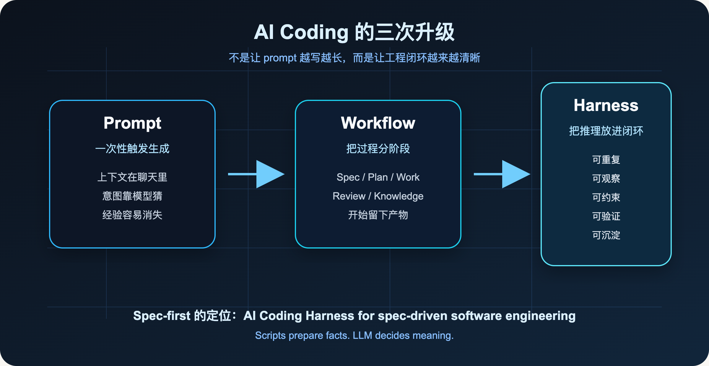
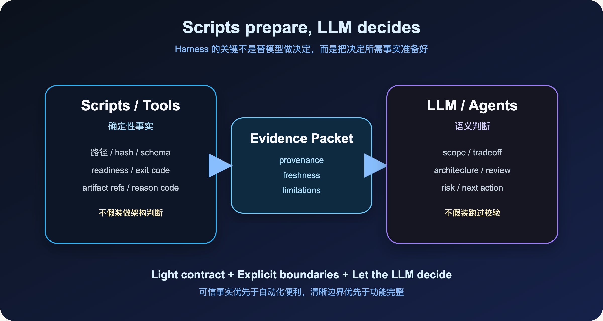
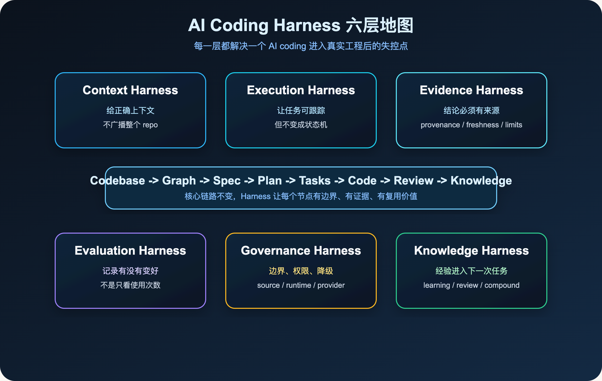

把不稳定的 AI 推理，放进可重复、可观察、可约束、可验证的工程闭环。
导读
这一篇只回答一个问题：spec-first到底是什么。
我的最新答案是：它不是 prompt pack，也不是 agent collection，而是一层面向真实软件工程的 AI Coding Harness。
上一篇我写的是：
AI Coding 不是 Prompt 问题，而是 Workflow 问题。
这句话仍然成立。
但如果继续往工程落地看，Workflow 还不够完整。
Workflow 说明了“有一条流程”。真实工程里更难的事情，是让 AI 的每一次判断都发生在更稳定的条件下：上下文可信、边界清楚、执行可追踪、结论有证据、失败能降级、经验能沉淀。
这就是我现在更愿意用 Harness 描述 spec-first 的原因。
如果只用一句话定义：
AI Coding Harness 是把模型能力接入真实工程闭环的承载层。
它不负责替模型思考，也不负责把所有步骤写死。
它负责让模型工作时具备更好的工程条件：
这也是 spec-first 的定位升级。
它不是“再写一套 prompt”，也不是“收集更多 agent”。它要做的是把 AI coding 从一次性对话，放进一个可治理、可验证、可复用、可沉淀的工程系统里。
如果把 AI coding 的问题理解成“模型还不够聪明”，我们自然会走向两个方向：找更强模型，写更长 prompt。
这两件事当然有价值，但它们只能解决一部分问题。
一个模型再强，如果它不知道当前代码库的真实结构，它还是会猜。
一个 prompt 再长，如果里面混着过期文档、生成产物、未验证的 provider 结果，它还是会被污染。
一个 agent 再能执行，如果计划没有边界、review 没有证据、失败没有记录，它还是会把任务做成一段不可复盘的临时对话。
所以真实工程里的关键问题不是继续追问：
怎么让模型更会写代码？
而是追问：
怎么让模型的每一次判断，都在可治理的工程环境里发生？
这就是 Harness。
可以把三者的边界拆开看：
先用一张图定位这个变化：

我对 Harness 的理解很简单：
Harness 不是再套一层流程，也不是写一堆更复杂的 prompt。它是在 AI 和真实工程之间放一层承载结构，让模型可以在更稳定的工程条件下工作。
这层结构至少要负责六件事：
注意这里的重点不是“替模型思考”。
spec-first 不想把所有判断写死，也不想让脚本模拟架构师。它想做的是把模型放到更好的工程输入、执行边界和验证环境里。
换句话说：
Harness 的目标不是替模型思考，而是让模型在更好的工程条件下思考。
Prompt 很重要。
但 prompt 很容易变成瞬时输入。
今天你在一个会话里写了一段很好的约束：
你要先看代码结构，再给计划，再改文件，最后跑测试。这当然有用。
但下一次呢？下一个会话呢？另一个 teammate 的机器上呢？Claude Code 和 Codex 同时使用时呢？
如果这些约束只存在于聊天窗口里，它们很难成为工程系统的一部分。
spec-first 想做的事情，是把关键约束变成项目内可复用的结构。
需求进入 requirements brief，计划进入 plan，任务进入 task pack，review 形成结构化 findings，debug 留下 hypothesis ledger，经验沉淀进 docs/solutions/。
host runtime 也应该从 source 生成，而不是手工维护副本。
这不是 prompt 技巧。
这是工程承载层。
所以我现在更愿意这样定义 spec-first：
spec-first = AI Coding Harness for spec-driven software engineering
它不是要替代模型，也不是要替工程师做所有决定。
它只是把 AI coding 从一次性对话，放进一个更可治理的工程闭环。
另一种误解是：既然要治理 AI，是不是应该把所有步骤都写死？
例如：
第一步必须读 A
第二步必须读 B
第三步必须输出 C
第四步必须调用 D我不这么看。
真实软件工程里，很多关键判断都是语义判断。
比如这次改动到底算 bug fix，还是行为变更？一个 review finding 是否真的成立？Graph 结果只是 pointer，还是已经足够影响计划？
一个旧 learning 现在还适用吗？当前任务应该继续做，还是回到 brainstorm 澄清 scope？
这些问题不适合交给脚本硬编码。
真正需要被写死的，不是判断本身，而是判断前后的边界。

脚本擅长做这些事情：
这些事实应该可复验、可追踪、可失败。
脚本不应该假装自己是架构师。
LLM 和 agent 擅长做的是另一类事情：需求理解、架构取舍、计划拆分、review 判断、风险解释、fallback 决策和下一步建议。
所以 spec-first 里有一个非常重要的原则：
Scripts prepare, LLM decides.
脚本准备事实，LLM 做判断。
这不是一句口号。它决定了整个系统的边界。
如果反过来，让脚本模拟架构判断，系统会变成脆弱的规则引擎。
如果让 LLM 假装自己跑过确定性校验，系统会变成不可验证的幻觉。
Harness 的价值，是把这两边接起来：事实来自可复验的工具和脚本，判断来自 LLM，中间用 evidence、artifact、reason code、limitations 连接。
这一层的关键不是“自动化越多越好”，而是边界必须显式。
如果把 spec-first 拆开看，它大致有六层。
这六层不是六个功能菜单，而是六个工程问题：输入是否可信，执行是否可追踪，结论是否有证据，结果是否真的变好，边界是否可治理，经验是否能沉淀。

AI coding 最常见的问题之一，是模型拿到的上下文不稳定。
很多人会自然想到一个解法：那就多给点上下文。
但真正重要的不是更多上下文，而是正确上下文。
在 spec-first 里，Context Harness 关心的是：哪些项目指令已经被宿主加载过，哪些源码、测试、diff 和 plan 是当前任务必须读的。
它也会区分哪些 provider facts 只是 advisory，哪些 graph evidence 已经 stale，哪些 generated runtime mirror 默认不该当 source-of-truth。
这一层解决的是：
给模型正确上下文，而不是无限上下文。
下一篇我会专门写这个主题：正确上下文不是无限上下文。
很多 AI coding 的失败，不是第一步就错了，而是执行中慢慢漂移。
一开始任务说的是“修复登录错误提示”。做着做着，模型可能开始重构认证模块、改 UI 组件、顺手调整样式，最后变成另一个任务。
Execution Harness 的作用，是让任务在 plan、task、work、review 之间能传递 scope、task identity、repo scope 和 handoff evidence。
它不是状态机。
它不规定每个任务必须走同样路线。
但它要求关键边界留下来：要做什么，不做什么，影响哪些文件，怎么验证，失败怎么处理，完成后交给谁消费。
这一层解决的是：
任务可以交给 AI 执行，但 scope 和 handoff 不能丢。
这是 AI coding 走向工程化时最重要的一层。
很多时候，AI 的回答听起来很合理。但你继续追问“这个结论从哪里来”，就会发现它只是“看起来像”。
Evidence Harness 要求结论必须带来源。
在 spec-first 里，证据不是一个模糊词。它会区分 confirmed、session-local、advisory 和 stale。
因为 GitNexus、ast-grep、MCP provider、session history 都很有价值，但它们不能自动变成真相。
Provider evidence 可以提供线索。最终 finding、root cause、scope change 仍然要由 source、test、log、schema、contract 或用户确认来支撑。
这一层解决的是：
AI 的结论必须能回答：证据从哪里来？
很多 AI 工具会告诉你用了多少次、节省了多少时间、自动生成了多少代码。
这些指标有用，但不够。
spec-first 更关心的是：review 质量有没有提高，debug 命中率有没有提高，graph evidence 是否真的帮助减少误判，workflow 产物是否被下游消费，新增规则是否减少了重复失败。
Evaluation Harness 不只是统计使用量。
它应该回答：
这套 AI coding workflow 有没有真的让工程质量变好？
这件事很难。
但如果不开始记录，AI coding 就很容易停留在“感觉有效”。
这层保护的是系统长期可用。
比如 source-of-truth 和 generated runtime 的边界，Claude Code 和 Codex 双宿主的 runtime 生成边界，provider readiness 的 freshness 和 degraded mode。
再比如 mutation capability 的 preview-first，raw provider output 不进入 durable docs，secret 和 credential 不进入持久产物。
这些东西在 demo 里不显眼，但在真实项目里非常重要。
一个例子：如果 .agents/skills/ 里的 runtime 副本过期了，最容易的修法是直接改它。
但这就是错的。
正确做法是回到 skills/、agents/、templates/ 这些 source-of-truth，修源头，再通过 spec-first init 或生成链刷新 runtime。
否则系统会开始漂移：source 说一套，runtime 跑一套，review 看另一套，下次 init 又覆盖回来。
Governance Harness 不是为了让流程变重。
它是为了让系统不因为一次“临时修一下”而失去可信边界。
AI coding 最大的浪费之一，是每次任务都从零开始。
同一个坑，今天踩一次。下周换个会话，再踩一次。再过一周换个模型，又踩一次。
如果一次 bugfix、一次 review failure、一次 release 踩坑，最后只留在聊天记录里，它就没有进入工程系统。
Knowledge Harness 要做的是：把已验证的经验沉淀下来，让它可以被后续 workflow 发现，允许它被刷新、合并、替换或废弃，同时不要求每次 workflow 都全量读取知识库。
所以 docs/solutions/ 对我来说不是文档堆。
它是团队和 AI 共同积累出来的工程记忆。
这一层解决的是：
每次任务都让下一次任务更容易一点。
很多人讲 AI agent，会自然走向一个方向：人越少介入越好。
我不完全认同。
在真实工程里，人不应该退出。人的角色应该变化。
以前，人的主要价值是亲手写每一行代码。现在，人的价值越来越多地体现在：定义目标，明确边界，判断 tradeoff，审查证据，接受或拒绝风险，把经验沉淀成下一次输入。
Harness 不是为了把人赶走。
Harness 是为了让人不用盯着每一行生成过程，而是可以站在更高层审查：目标对不对，输入够不够，计划稳不稳，证据可信不可信，结果能不能交付，经验有没有留下来。
写代码只是其中一环。
决定该写什么、为什么这样写、怎么证明写对了、下次怎么少踩坑，才是更大的系统问题。
回到 spec-first。
它不是模型，不是 IDE，不是一个 agent 平台，也不是一个“万能自动开发系统”。
我现在更愿意把它放在这个位置：
Codebase
-> Graph
-> Spec
-> Plan
-> Tasks
-> Code
-> Review
-> Knowledgespec-first 做的是这条链路上的 Harness。
在 Codebase 和 Graph 之间，它帮助 AI 拿到更可靠的代码事实。
在 Spec 和 Plan 之间，它把模糊意图变成可审查的工程输入。
在 Work 和 Review 之间，它让实现、验证和风险都有记录。
在 Review 和 Knowledge 之间，它把一次经验沉淀成下一次优势。
这也是为什么它要同时关心 CLI、skills、agents、contracts、generated runtime、changelog、docs/solutions/、graph readiness 和 review evidence。
这些东西单独看都不性感。
但合在一起，它们回答的是同一个问题：
怎样让 AI coding 从一次性对话，变成可治理、可验证、可复用、可沉淀的工程闭环？
这就是 AI Coding Harness。
最后，给一个很简单的自测。
如果你现在的 AI coding 过程里，已经能稳定回答下面这些问题，那你可能暂时不需要 spec-first 这种 Harness：
如果这些问题里，有一半以上答案是不确定的，那么问题大概率不是 prompt 不够好。
问题是：
你还缺一层 AI Coding Harness。
这也是 spec-first 接下来想持续做下去的事情。
下一篇，我想写：
为什么你不敢把任务真正交给 AI
你不是不想委派。
你只是不知道该如何相信它。
而 Harness 要解决的，正是这个信任问题。
如果只用一句话总结：
AI Coding Harness 的价值，不是让模型替你做所有决定，而是让模型的每一次决定都发生在更好的工程条件里。
这也是我理解的 spec-first：
不是 prompt pack。
不是 agent collection。
不是复杂状态机。
而是一层让 AI coding 可治理、可验证、可复用、可沉淀的工程 Harness。
更具体地说，它想守住三件事：
如果 Prompt 解决的是“怎么让模型听懂我”。
那 Harness 解决的是：
怎么让模型的判断进入真正的工程闭环。